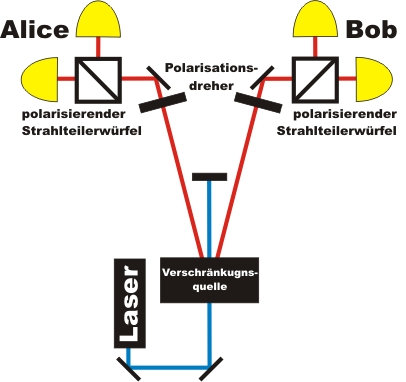

Verschränkung Kapitel 2:
Wie verhalten sich verschränkte Photonen
bei unterschiedlichen Messungen?
Im letzten Kapitel (Kapitel_1) wurde gezeigt, dass verschränkte Photonen an einem symmetrischen polarisierenden Strahlteiler (50% zu 50%) immer exakt das gleiche machen. Welches Verhalten zeigen verschränkte Photonenpaare bei anderen Verhältnissen am Strahlteiler?
Auf dieser Seite wird zunächst erklärt, wie das Strahlteilerverhältnis durch die Kombination eines Polarisationsdrehers (λ/2-Platte) und eines polarisierenden Strahlteilerwürfels beliebig verändert werden kann. Danach werden verschiedene Messungen an verschränkten Photonen durchgeführt.
Grundlage: Polarisationsdreher und Strahlteiler
Um Messungen am Strahlteilerwürfel mit unterschiedlichen Teilungsverhältnissen durchführen zu können wird neben einem polarisierenden Strahlteilerwürfel ein variabler Polarisationsdreher benötigt (Abb. 1). Der polarisierende Strahlteilerwürfel hat die Eigenschaft, dass er Photonen mit linearer horizontaler Polarisation (Polarisation = 0°) zu 100% transmittiert und Photonen mit linearer vertikaler Polarisation (Polarisation = 90°) zu 0% transmittiert. Wenn die Photonen nicht transmittiert werden, so werden dieses am Strahlteilerwürfel immer reflektiert. Der Strahlteilerwürfel ist eigentlich nur ein Entscheider: Besitzt das einzelne Photon horizontale Polarisation? "Ja" entspricht transmittiert und "Nein" entspricht reflektiert. Wenn die Polarisation des Photons nicht horizontal (0°) oder vertikal (90°) ist, sondern zwischen 0° und 90° liegt, so werden die Photonen mit den Wahrscheinlichkeiten T zwischen T=100% und T=0% transmittiert (Gesetz von Malus: T=100%*cos²(ß)).
Die lineare Polarisation der Photonen kann vor dem Strahlteilerwürfel mit einem Polarisationsdreher (λ/2-Platte) gedreht werden. Wenn ein Photon mit einer horizontalen (0°) Polarisation durch den Polarisationsdreher um ß=45° gedreht wird, dann entspricht die Wahrscheinlichkeit W für die Transmission am Strahlteilerwürfel nicht mehr T=100% sondern T=50% (Gesetz von Malus). In 50% aller Fälle wird das Photon nun transmittiert und in 50% der Fälle reflektiert - eine reine Zufallsentscheidung über die Polarisation des Photons.
Mit der Kombination aus einem Polarisationsdreher und einem Strahlteilerwürfel können somit beliebige Teilungsverhältnisse zwischen T=0% und T=100% eingestellt werden. Um die lineare Polarisation eines Photons um den Winkel ß zu drehen muss beim Polarisationsdreher aus Symmetriegründen immer nur die Hälfte des Winkels ß eingestellt werden.
Der bekannte Polarisationsfiler aus der Schule verhält sich genauso wie der transmittierte Zweig der Kombination Polarisationsdreher & Strahlteilerwürfel. Wenn die Richtung des Polarisationsfilters mit der Polarisation des Photons übereinstimmtt, wird das Photon mit der der Wahrscheinlichkeit von T=100% transmittiert, ansonsten absorbiert. Das absorbierte Photon beim Polarisationsfilter entspricht dem reflektierten Photon am Strahlteiler. Bei der Kombination aus Polarisationsdreher und Strahlteiler gibt es im Vergleich zum Polarisationsfilter keinen Verlust - jedes Photon kann detektiert werden.
Abb. 1: Polarisationsdreher und Strahlteilerwürfel
links: Skizze, rechts: Experiment
Verschränkung erfolgt immer zwischen zwei Photonen. Wenn an verschränkten Photonen gleichzeitig verschiedene Polarisationseigenschaften vermessen werden sollen, so muss die Kombination Polarisationsdreher und Strahleiter für beide Photonen des Photonenpaares vorhanden sein (Abb. 2).

Abb. 2: Skizze zum Aufbau des Experiments
Verschränkung: Einzelmessung verschiedener Polarisationseigenschaften
Im folgenden Experiment sollen unterschiedliche Strahlteilerverhältnisse an verschränkten Photonen gemessen werden. Das Strahlteilerverhältnis wird mit Hilfe des Polarisationsdreher beliebig gewählt, ist aber auf beiden Seiten gleich. Im interaktiven Experiment können die Winkel in 10° Schritten von 0° - 90° mit den zwei grauen Tastern (links neben den Polarisationsdrehern) verändert werden.
a) Welches Verhalten zeigen nicht verschränkte Photonenpaare bei beliebigen symmetrischen Strahlteilerverhältnissen?
b) Welches Verhalten zeigen verschränkte Photonenpaare bei beliebigen symmetrischen Strahlteilerverhältnissen?
Beobachtung:
zu a)
Bei nicht verschränkten Photonenpaaren werden die beiden Photonen einzeln zufällig transmittiert oder refklektiert. Die Wahrscheinlichkeit der Transmission T jedes einzelnen Photons ist dabei vom Winkel ß des Polarisationsdrehers abhängig (Gesetz von Malus: T=100%*cos²(ß)). Bei der Einstellung der Polarisationsdreher von 0° werden T=100% aller Photonen transmittiert. Bei der Einstellung der Polarisationsdreher von 45° werden T=50% aller Photonen transmittiert (Zufallsprozess). Bei der Einstellung der Polarisationsdreher von 90° werden T=0% aller Photonen transmittiert.zu b)
Bei verschränkten Photonenpaaren verhalten sich beide Photonen unabhängig vom Winkel des Polarisationsdrehers immer gleich: Entweder beide Photonen werden transmittiert oder beide Photonen werden refklektiert. Die Wahrscheinlichkeit für die Transmission beträgt unabhängig vom Winkel des Polarisationsdrehers ß immer T=50%. Bei verschränkten Photonen existiert immer dann ein Zufallsprozess, wenn beide Winkel der Polarisationsdreher exakt die gleichen sind. Das Gesetz von Malus kann hier nicht mehr angewendet werden. Das Verhalten der Photonen bei unterschiedlichen Winkeln der beiden Polarisationsdreher wird in Kapitel_A beschrieben.
Ist das Verhalten der Photonen jetzt etwas besonderes? Woher weiß eigentlich das einzelne Photon, was es am Strahlteiler machen soll? Wie kann das Verhalten des einzelnen Photons im Vergleich zu seinem Partner erklärt werden?
Eine mögliche Erklärung des Phänomens ist die gemeinsame "Absprache" der Photonenpaare in der Quelle für jeden Winkel des Polarisationsdrehers: "Bei dem Winkel des Polarisationsdrehers von 63,3° gehen wir beide am Strahlteiler transmittiert durch, bei dem Winkel von 63,4° gehen wird beide am Strahlteiler reflektiert durch, usw. ". Die "Absprache" muss für alle am Polarisationsdreher einstellbaren Winkel erfolgen.
Das Verhalten der verschränkten Photonen könnte mit der Möglichkeit "Absprache" erklärbar sein. Wo ist jetzt die Faszination der Verschränkung geblieben? Hat Einstein bei der Verschränkung nicht mal von "spukhaften Eigenschaften" gesprochen? Im nächsten Kapitel (Kapitel_3) wird die Annahme der "Absprache" der Photonen in der Quelle der Photonenpaare mit einem ausführlichen Alltagsbeispiel genauer untersucht. Spätestens mit diesem Ergebnis kann die Entscheidung der Photonen nicht mehr mit unserer alltäglichen Erfahrung erklärt werden.Im Kapitel A kann das gleiche Experiment mit kontinuierlicher Datenrate durchgeführt werden.
Originaldaten aus dem Experiment: Einzelereignisse
Zum Kapitel 3: Ist das Phänomen Verschränkung mit unserer alltäglichen Erfahrung erklärbar? [klick]
Zurück zur Übersicht [klick]
Autor: P. Bronner, Mai 2008